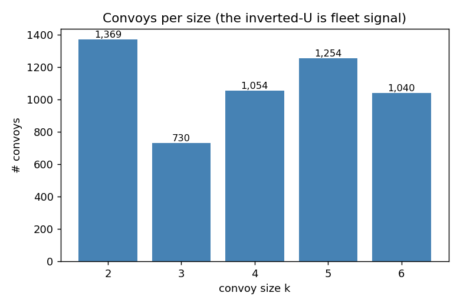
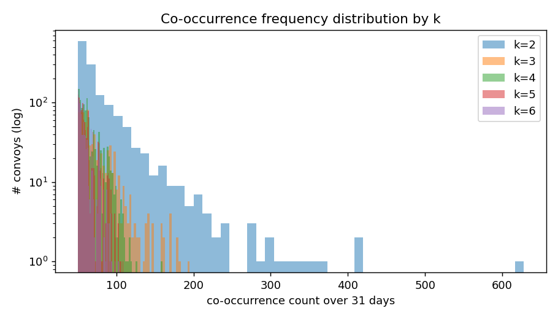
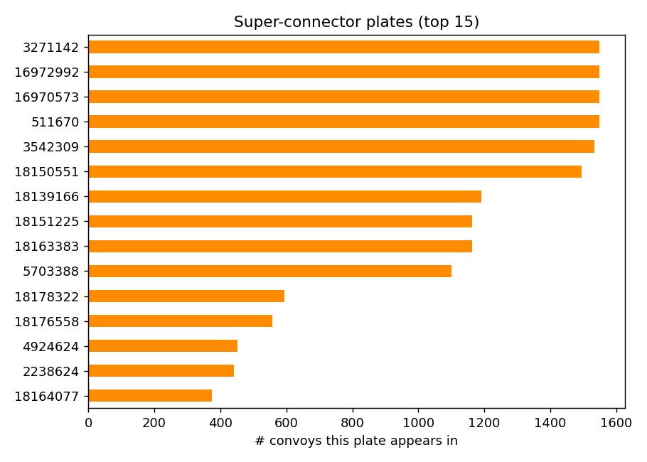

Sviluppo · FP-Growth reproduction
A faithful reproduction of the baseline FP-Growth convoy miner on a modern Slurm-managed Spark substrate, run end-to-end over the full 31-day, 275.9-million-record dataset. This section retraces the method, the headline output, and the structural readings that sharpened it.
01 / Reproduction Substrate
The original work targeted HDFS + YARN on a 5×8c×8 GB cluster. We replace the storage and resource-manager layers with what the platform already provides: GPFS as the shared FS, Slurm as the container scheduler. Spark runs standalone inside the allocation; the cluster lives only as long as the job.
file:// readssrun × 502 / Methodology
For each (location, bucket) we form a transaction — the distinct plates passing the checkpoint inside that 300 s bucket. Spark MLlib's distributed Parallel FP-Growth mines frequent vehicle groups (sizes 2–6) from those transactions.
We run the bucketize-and-mine pipeline twice with bucket origins offset = 0 and offset = window/2. Convoys split by Grid A's boundary are kept whole by Grid B; we then take max(freq_A, freq_B) per itemset.
A density gate at 2,000 plates/bucket excludes the single 23,595-plate freak bucket at loc 31 that crashed earlier runs — picked from a per-location density study, 15 % above the largest legitimate bucket.
03 / Filter & Headline
Drawn from only 783 distinct plates — 0.0036 % of the vehicle population. Convoy signal is sparse and sharp.
(477634, 491688)628(1737487, 3279908, 4863665)195(17207389, 17210840, 17210845, 396910)160{16970573, 16972992, 3271142, 3542309, 511670}10904 / Top-5 Per Convoy Size
| # | plates | count |
|---|---|---|
| 1 | 477634, 491688 | 628 |
| 2 | 477634, 516583 | 418 |
| 3 | 149912, 405007 | 411 |
| 4 | 405007, 413224 | 368 |
| 5 | 149912, 413224 | 361 |
| # | plates | count |
|---|---|---|
| 1 | 1737487, 3279908, 4863665 | 195 |
| 2 | 1737487, 3279908, 5093843 | 183 |
| 3 | 477634, 491688, 516583 | 179 |
| 4 | 3279908, 4863665, 5093843 | 178 |
| 5 | 149912, 405007, 413224 | 171 |
| # | plates | count |
|---|---|---|
| 1 | 17207389, 17210840, 17210845, 396910 | 160 |
| 2 | 1737487, 3279908, 4863665, 5093843 | 125 |
| 3 | 3279908, 4863665, 4945115, 4954957 | 120 |
| 4 | 1737487, 3279908, 4863665, 4954957 | 118 |
| 5 | 16970573, 16972992, 3271142, 3542309 | 117 |
| # | plates | count |
|---|---|---|
| 1 | 16970573, 16972992, 3271142, 3542309, 511670 | 109 |
| 2 | 16970573, 16972992, 18150551, 3271142, 511670 | 106 |
| 3 | 16970573, 16972992, 18150551, 3271142, 3542309 | 105 |
| 4 | 16970573, 18150551, 3271142, 3542309, 511670 | 103 |
| 5 | 16972992, 18150551, 3271142, 3542309, 511670 | 103 |
| # | plates | count |
|---|---|---|
| 1 | 16970573, 16972992, 18150551, 3271142, 3542309, 511670 | 103 |
| 2 | 16970573, 16972992, 18139166, 3271142, 3542309, 511670 | 98 |
| 3 | 16970573, 16972992, 18139166, 18150551, 3271142, 511670 | 94 |
| 4 | 16970573, 16972992, 18139166, 18150551, 3271142, 3542309 | 93 |
| 5 | 16970573, 18139166, 18150551, 3271142, 3542309, 511670 | 93 |
05 / Distributions

C(n,k) subset-itemsets.

06 / Operational Interpretation
477634, 4916881737487, 3279908, 4863665, 509384316970573, 16972992, 18150551, 3271142, 3542309, 51167016970573 / 16972992 and 17210840 / 17210845 differ by a single digit; a sampling verification pass on raw frames should resolve which convoys are real and which are OCR artifacts.07 / Annotations toward Climax
FP-Growth treated each (location, 5-min bucket) as one transaction — set-of-cells semantics. It carried us to 5,447 convoys and three identifiable fleets, but it leaves three structural deficiencies the next section addresses:
FP-Growth knows "these plates were in many of the same cells" but not "these plates traversed cameras A → B → C in order." The next algorithm (MaxGrowth) promotes route to a first-class object.
A 6-vehicle fleet that misses one camera in one bucket splits into smaller subsets and loses its top-line co-occurrence count. MaxGrowth's d parameter explicitly tolerates a bounded number of missing detections per route.